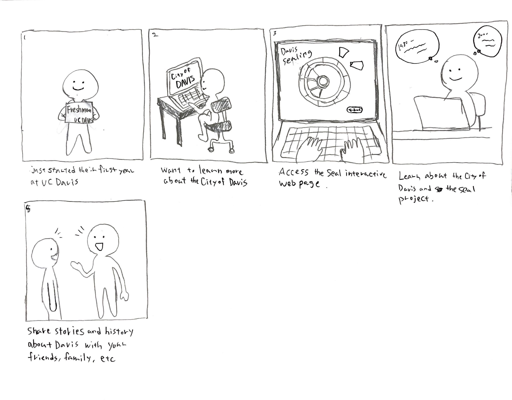

Creating a user journey was both challenging and enjoyable during the class. While discussing my user journey with Jaclyn, I began contemplating how potential users might discover my web page. To refine my target audience, I decided to focus on a more specific persona: an international UC Davis student who is new to the city and stumbles upon the seal while exploring downtown. After discovering a website link to the seal (which could be presented as a QR code for quick access), they return home and search for the project online using their desktop or mobile device.
I believe this approach will help me narrow down my ideas for the seal project website.
